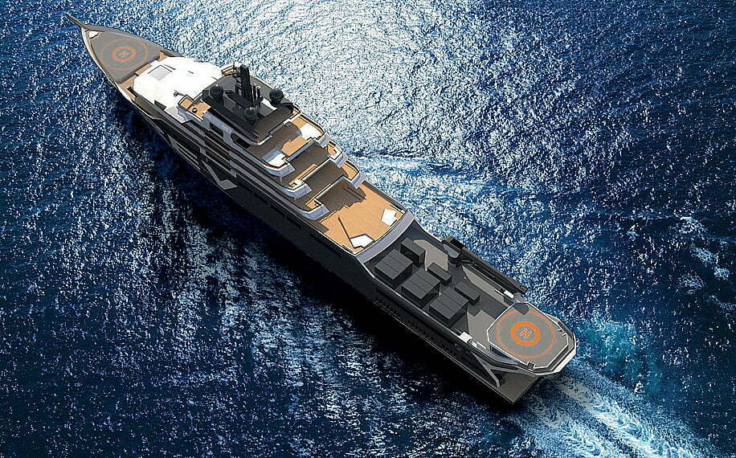

ESPECIFICAÇÕES DAS EMBARCAÇÕES ESPECIALIZADAS NO SISTEMA DE COLETA DE LIXO MARÍTIMO
- 1. Design Resistente: As embarcações são projetadas com materiais resistentes à corrosão e duráveis para suportar as condições adversas do ambiente marítimo.
- 2. Sensores Avançados: As barreiras flutuantes estão equipadas com sensores avançados, como câmeras de vídeo e sensores de proximidade, para detectar detritos plásticos e outros resíduos na água.
- 3. Capacidade de Navegação Autônoma: Algumas embarcações podem ter sistemas de navegação autônoma que lhes permitem operar de forma independente, seguindo rotas pré-programadas ou respondendo a comandos remotos.
- 4. Capacidade de Coleta: Elas possuem mecanismos de coleta eficientes, como redes ou braços mecânicos, para recolher os detritos detectados pelas barreiras flutuantes.
- 5. Armazenamento Seguro: As embarcações têm compartimentos de armazenamento seguro para os detritos coletados, garantindo que não haja vazamentos ou contaminação durante o transporte.
- 6. Meios de Comunicação: Estão equipadas com sistemas de comunicação para relatar sua localização, status operacional e quantidade de detritos coletados para a base de operações.
- 7. Energia Sustentável: Algumas embarcações podem ser alimentadas por fontes de energia sustentável, como energia solar ou eólica, para reduzir sua pegada ambiental.
- 8. Drones Marítimos Auxiliares: Além das embarcações principais, o sistema pode incluir drones marítimos menores e ágeis para alcançar áreas de difícil acesso ou reforçar a coleta em locais específicos.
- 9. Monitoramento em Tempo Real: Os operadores têm acesso a um sistema de monitoramento em tempo real que mostra a localização das embarcações, o progresso da coleta e outras informações relevantes.
- 10.Descarte Responsável: Após a coleta, as embarcações transportam os detritos para instalações de reciclagem ou descarte adequado, contribuindo para a redução da poluição marinha.